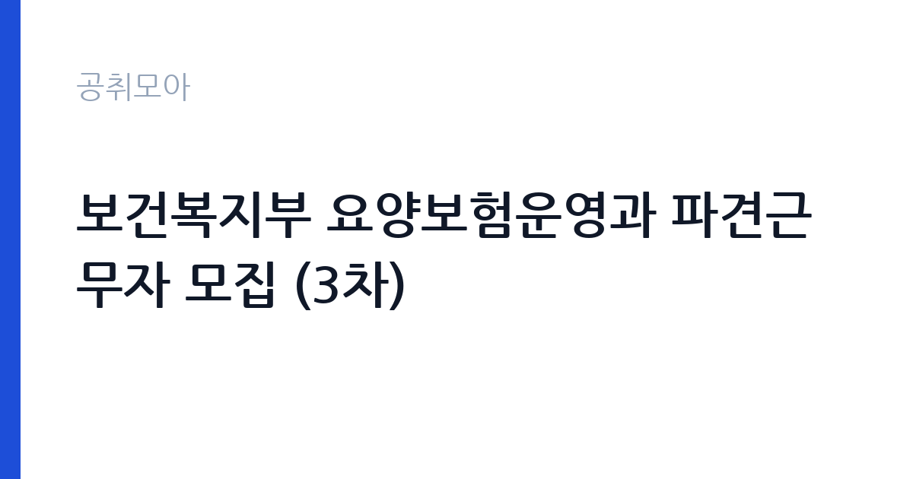

[국가기관] 보건복지부 요양보험운영과 파견근무자 모집 (3차)
보건복지부 인구사회서비스정책실 노인정책관 · 전국 · 마감 2026-10-23 (D-16) · 출처 나라일터

한눈에 보는 모집 조건
| 기관 | 보건복지부 인구사회서비스정책실 노인정책관 |
|---|---|
| 공고명 | 보건복지부 요양보험운영과 파견근무자 모집 (3차) |
| 고용형태 | 정규직 |
| 근무지 | 전국 |
| 게시일 | 2026-10-08 |
| 마감일 | 2026-10-23 (D-16) |
지원자격, 이렇게 읽으세요
- 지방 사회복지, 행정, 보건, 간호직 6~9급 1명
- 접수 ~2026-10-23 마감
- 세부 조건은 원문 공고문 확인
공고문의 응시자격은 짧게 쓰여 있지만 실제로는 세 가지를 봅니다. 첫째 결격사유 해당 여부, 둘째 자격·경력의 직무 연관성, 셋째 근무 시작 가능일입니다. 셋 중 하나라도 애매하면 원문 공고문의 세부 조항을 먼저 확인하고 지원서를 쓰세요. 특히 보건복지부 인구사회서비스정책실 노인정책관 공고는 정규직 전형이라 서류에서 직무 연관 키워드(국가기관)를 명시하는 게 유리합니다.
이 공고의 포인트
합격 가능성을 가르는 한 줄은 '지방 사회복지, 행정, 보건, 간호직 6~9급 1명'입니다. 태그로 치면 ''에 해당하는 지원자가 유리한 구조입니다. 보건복지부 인구사회서비스정책실 노인정책관 공고는 D-16이라 시간이 촉박하니, 해당자는 오늘 지원서를 열고 비해당자는 관련 공고로 눈을 돌리는 결단이 필요합니다.
전형은 어떻게 진행되나
대부분 서류심사 후 면접심사 순으로 진행됩니다. 서류에서는 지원서·자기소개서의 직무 적합성을 보고, 면접에서는 실무 이해도와 근무 지속 가능성을 봅니다. 마감일(2026-10-23) 직전에는 접속이 몰려 원서 접수가 막히는 경우가 있으니 최소 하루 전 제출을 권합니다. 제출 후에는 접수번호·수험표 출력 여부를 반드시 확인하세요.
원문에서 확인한 전형 방식
보건복지부 공고 제 2026-768호 보건복지부 요양보험운영과 파견근무자 모집 안내 □ 모집개요 ○ 모집인원 : 지자체 사회복지직, 행정직, 보건직 또는 간호직 6~9급 공무원 1명 ○ 근무형태 : 파견근무 (지방공무원임용령 제27조의2에 의함) ○ 근무기간 : 2026. 10월 중, 파견일로부터 1년 (필요시 연장 가능) ○ 근무처 : 보건복지부 인구사회서비스정책실 요양보험운영과 * 소재지 : 세종특별자치시 가름로, 143, KT&G 세종타워 B, 13층 ○ 업무내용 : 유니트케어, 전문요양실 시범사업 운영 및 통계관리 * 업무분장에 따라 업무 내용은 달라질 수 있음 ○ 추진일정 - 공고 및 신청자 접수 : \26.10.8.(목) ~ 10.23.(금) - 신청자 면접 : 세종시, 10.26.(월) ~ 10.28.(수) 중 실시 * 면접장소 및 일정은 면접 대상자에게 개별 통보 예정 ** 면접을 위하여 간담회 형태의 출장 명령을 공문으로 송부 가능 - 최종 선발 : \26.10.30. 이내 * 해당 지자체에서 파견에 동의해 줄 수 있어야 하며, 요양보험운영과에서 소속 지자체에 협조 요청 추진 ○ 제출서류 : 붙임의 를 아래 이메일 주소로 제출 요양보험운영과
위 내용은 보건복지부 인구사회서비스정책실 노인정책관 원문 공고의 전형 항목을 그대로 옮긴 것입니다. 단계별 배수와 평가 요소가 적혀 있으니 본인 강점과 맞는 단계에 맞춰 준비 순서를 정하세요. 전형별 합격자 발표일도 원문에서 함께 확인하는 것이 좋습니다.
이런 분께 추천해요
- 전국 근무가 가능한 분 — 통근·거주 조건이 맞는지가 1순위입니다
- 정규직 전형을 찾는 분 — 국가기관 분야 관심자라면 우선 검토 대상입니다
- 마감(2026-10-23) 안에 서류를 낼 수 있는 분 — D-16이니 오늘 지원서 초안부터 잡으세요
지원 전 체크리스트
- 보건복지부 인구사회서비스정책실 노인정책관 원문 공고문 저장했는가(공고 변경 대비)
- 지원서 초안과 증빙 파일이 준비됐는가
- 접수 마감일 2026-10-23(D-16)을 달력에 표시했는가
- 전국 출퇴근·거주 조건이 맞는가
모집 일정과 제출 타이밍
게시일은 2026-10-08, 마감은 2026-10-23입니다. 남은 기간은 약 16일입니다. 서류 준비에 15일을 쓰고 마지막 하루는 접수·확인용으로 남겨두세요. 공공 채용은 마감일 24시간 전부터 지원자가 몰려 접수 페이지가 느려지거나 증빙 업로드가 실패하는 일이 잦습니다. 일정 운영의 정석은 이렇습니다. 첫날에는 공고문과 직무기술서를 출력해 응시자격·우대사항에 형광펜을 치고, 중간 기간에는 자기소개서 초안과 증빙 스캔을 끝내고, 마감 전날에는 접수 시스템에 미리 입력까지 마쳐 두는 것입니다. 마감 당일에 처음 접속하는 지원자가 가장 많이 탈락합니다. 접수번호가 발급되고 수험표(또는 접수확인서)가 출력돼야 접수가 끝난 것이니, 제출 후 확인증까지 꼭 챙기세요.
직무 이해하기: 국가기관
국가기관 채용은 법령상 결격사유 심사가 엄격합니다. 병역, 정년, 겸직 금지 조항을 본인 상황에 대입해 먼저 점검하세요. 보안·신원조회가 필요한 직위는 합격 후에도 탈락 사유가 될 수 있어 사전에 결격 여부를 확인하는 것이 시간을 아끼는 길입니다. 보건복지부 인구사회서비스정책실 노인정책관의 이번 채용(정규직)도 같은 잣대로 보면 됩니다. 공고 제목에 적힌 분야명과 직무기술서의 필요역량을 나란히 놓고, 본인 경험에서 겹치는 키워드를 세 개 이상 뽑아보세요. 그 세 개가 자기소개서와 면접 답변의 뼈대가 됩니다.
자기소개서 작성 팁
자기소개서에서 평가자가 찾는 건 직무와의 연결고리입니다. 서두에 지원 분야(국가기관)를 택한 이유를 한 문장으로 밝히고, 이어서 수치로 증명되는 경험 두 가지를 구체적으로 서술하세요. 마무리는 입사 후 1년의 실행 계획으로 닫습니다. 보건복지부 인구사회서비스정책실 노인정책관 지원자가 자주 놓치는 감점 포인트는 분야와 동떨어진 성장 배경 나열, 근거 없는 역량 주장, 마감일(2026-10-23) 착오입니다. 정규직 모집은 빠른 실무 적응이 관건이라 출근 가능 시점을 분명히 적는 것이 플러스가 됩니다.
면접 준비 포인트
면접관의 질문은 두 갈래입니다. 서류 내용의 사실 관계 확인, 그리고 우리 조직에 맞을지에 대한 판단입니다. 자소서의 핵심 경험 두 개를 1분 안에 설명하는 연습을 해두고, 보건복지부 인구사회서비스정책실 노인정책관의 대표 사업 하나를 지원 분야(국가기관)와 엮은 답변을 준비해 가세요. 마무리 질문에서는 근무지(전국)와 정규직 근무가 가능하다는 뜻을 간결하게 전하는 게 좋습니다. 단정한 복장, 30분 전 도착, 결론 우선 답변이 기본 수칙입니다.
급여·근무조건 읽는 법
급여표를 볼 때는 기본급과 실수령액을 구분해야 합니다. 공고문 수치는 대개 기본급이라 수당·상여가 빠진 금액입니다. 정규직 모집에서는 계약 기간과 갱신 조건, 4대 보험·퇴직금 적용이 핵심 체크 항목입니다. 보건복지부 인구사회서비스정책실 노인정책관 원문의 보수 규정을 펼치고, 근무지(전국)가 외곽이거나 야간·주말 근무가 있다면 주거·교통 지원 조항까지 확인한 뒤 지원서를 내세요.
자주 묻는 질문
- 다른 분야와 중복 지원이 가능한가요?
공고문에 별도 금지 조항이 없으면 가능하지만, 보건복지부 인구사회서비스정책실 노인정책관처럼 분야별 중복지원을 막는 기관이 많습니다. 원문 '지원 시 유의사항'을 먼저 확인하고, 가능하다면 가장 합격 가능성이 높은 한 분야에 집중하세요. - 우대사항에 해당되는지 어떻게 확인하나요?
이번 공고의 핵심 우대 조건은 '지방 사회복지, 행정, 보건, 간호직 6~9급 1명'와 ''입니다. 증빙(자격증·경력증명서·취업지원대상자 증명서) 발급에 시간이 걸리니 마감일(2026-10-23) 기준 최소 3일 전에는 서류를 손에 쥐고 있어야 합니다. - 서류가 간소화되는 경우도 있나요?
청년인턴·기간제 등 일부 전형은 서류심사를 생략하고 면접만 보기도 합니다. 보건복지부 인구사회서비스정책실 노인정책관 공고문의 전형절차 표를 확인하세요. 간소화 전형일수록 면접 준비에 시간을 몰아주는 게 유리합니다.
함께 보면 좋은 공고
[국가기관] 창원지방법원 공무직 근로자(시설관리원) 채용 공고 — 마감 2026-10-19[국가기관] 2026년 제6회 서청주우체국 공무직 상시계약집배원(농어촌소포배달원) 채용 공고 — 마감 2026-10-15[국가기관] 2026년 제6회 서청주우체국 공무직 상시계약집배원 채용 공고 — 마감 2026-10-15출처: 나라일터 공개정보를 바탕으로 공취모아가 정리한 안내글입니다. 모집 조건·일정은 변경될 수 있으니 지원 전 반드시 원문 공고문을 확인하세요. 본 글은 정보 제공용이며 합격을 보장하지 않습니다.